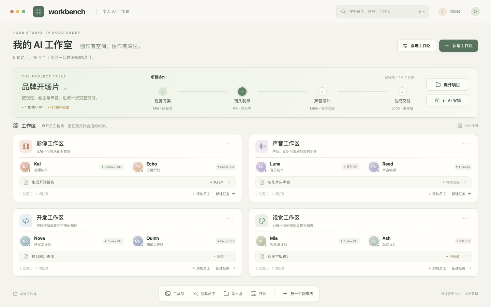
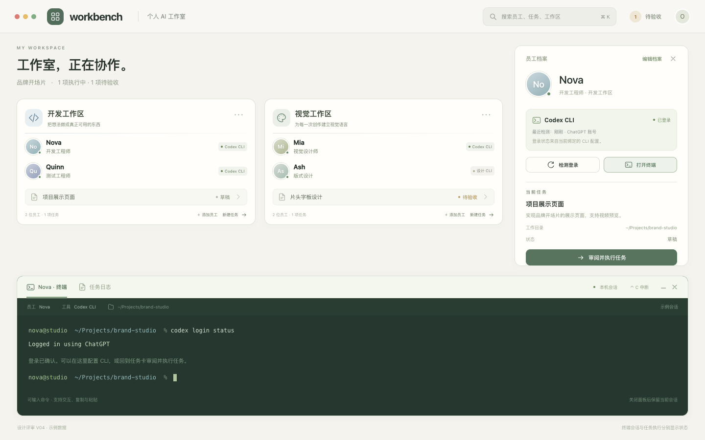
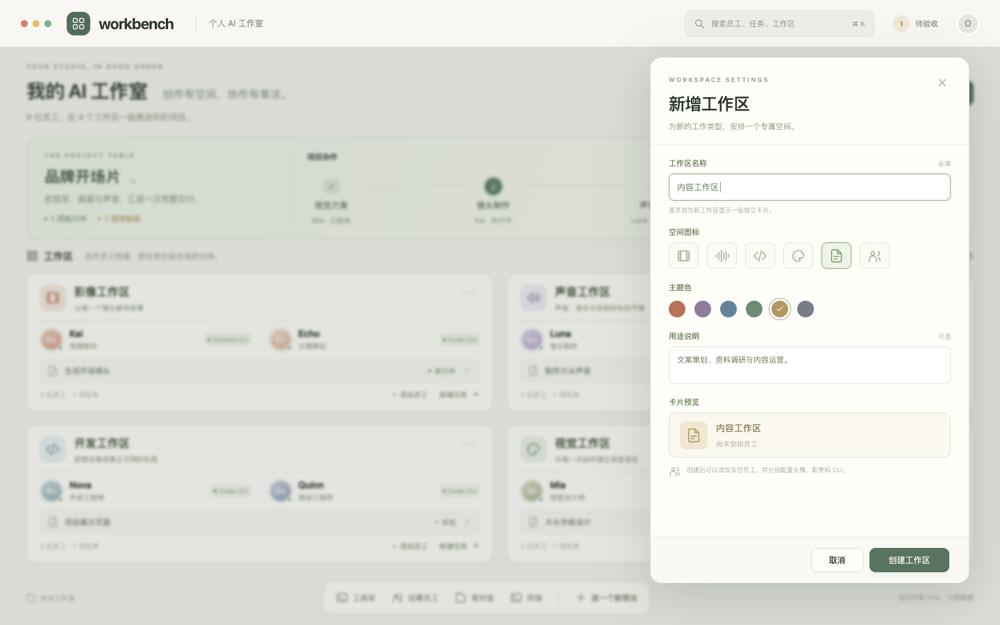
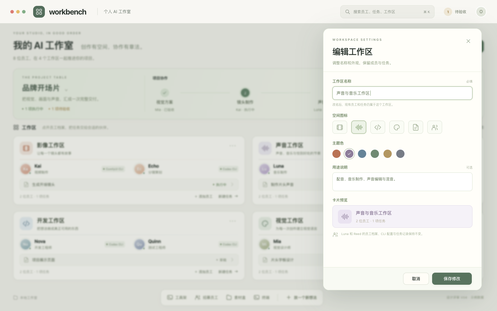

本轮先评审设计。所有员工、项目、账号状态与终端输出均为示例，页面不执行命令。
项目桌与工作区对齐排列，保留员工和任务的空间入口。

从员工档案检测登录、打开终端，审阅后执行任务。

默认四个之外可添加新工作区，单独设置图标和颜色。

修改工作区名称和外观，保留员工、CLI与任务关系。

| 功能 | 建议 | 评估 |
|---|---|---|
| 员工 CLI 登录检测 | 工具专用检测命令；显示认证结果及检测时间，失败与未登录分开。 | 可做，复杂度中 |
| 内置终端 | 按需打开真正的交互终端；登录、配置和手动命令可在软件内完成。 | 可做，复杂度较高 |
| 工作区新增与编辑 | 默认四区；使用稳定编号保存配置，扩展卡片并保持员工与任务关联。 | 可做，复杂度中 |